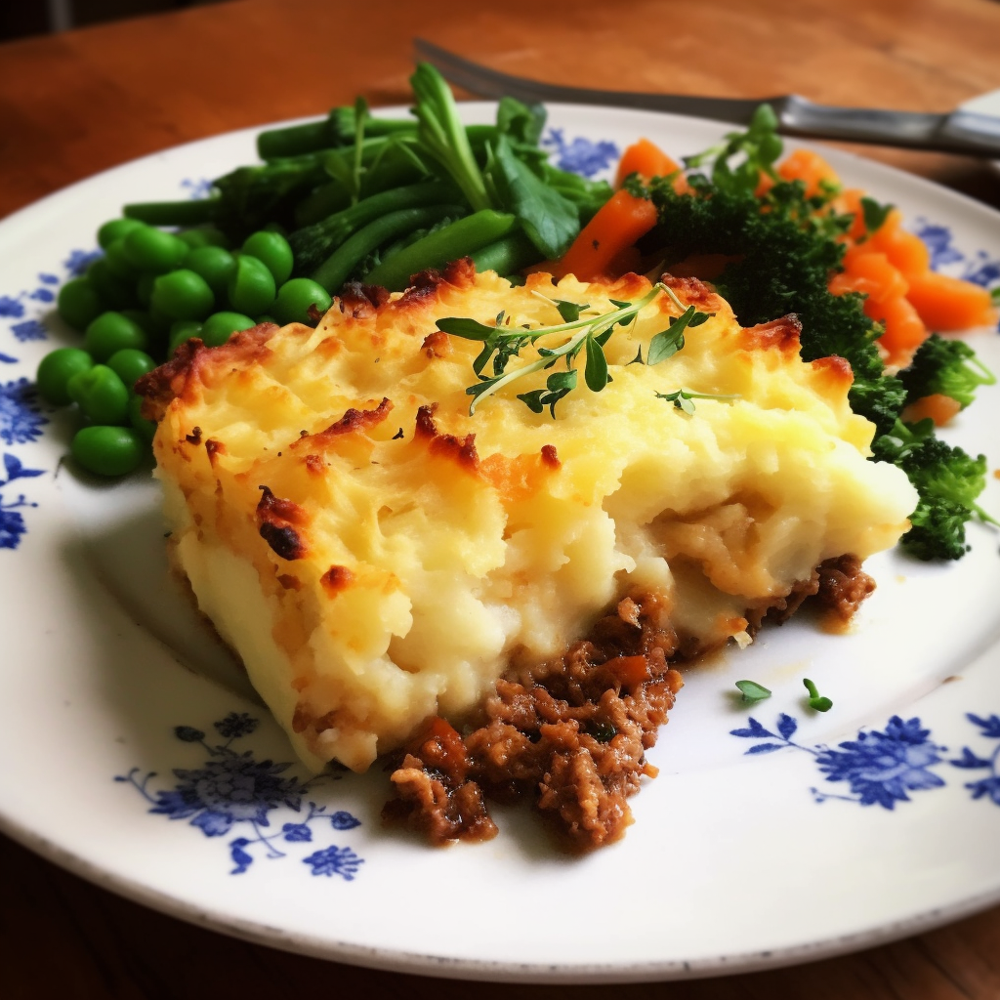
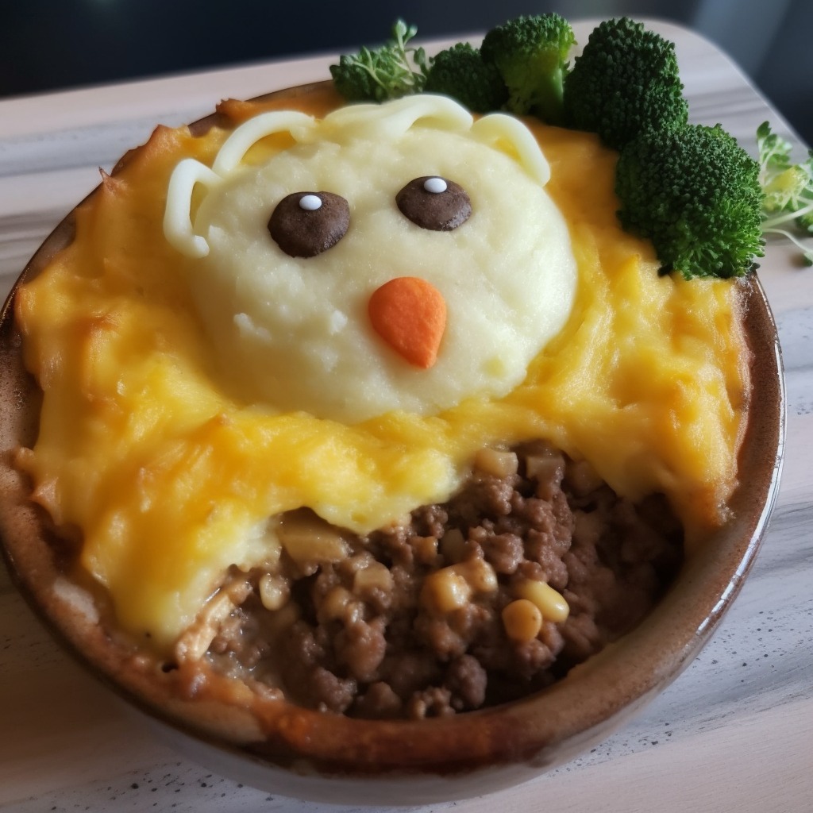

Shepherds Pie
Description
Shepherd's pie is a savory dish that is popular in British and Irish cuisine. Traditionally made with minced lamb or mutton, the dish consists of a layer of meat and vegetables cooked in a rich gravy, topped with a layer of mashed potatoes. The pie is then baked until the mashed potatoes are golden and crispy. In some variations, other vegetables such as carrots or peas may be added, and beef may be used instead of lamb. Shepherd's pie is a hearty and comforting meal that is perfect for cold winter nights or as a filling main course. It is often served with a side of green vegetables, such as peas or green beans, and a rich onion gravy.
ingredient's
- 1 tbsp sunflower oil
- 1 large onion, chopped
- 2-3 medium carrots, chopped
- 500g pack lamb mince
- 2 tbsp tomato purée
- large splash Worcestershire sauce
- 500ml beef stock
- 900g potatoes, cut into chunks
- 85g butter
- 3 tbsp milk